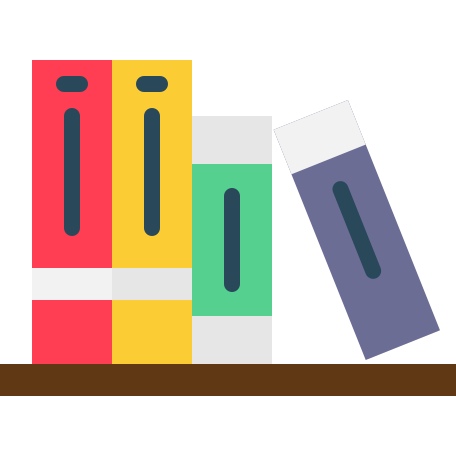

contato@marcelotulman.com.br
Telefone
11 2539-0362
11 2539-0362
Ensino Fundamental 2
Etapa em que os alunos devem aprender a serem mais independentes e organizados, pois precisarão lidar com diversos tipos de conhecimentos e informações
Ensino Médio
O ensino médio é, então, uma etapa que permite a criação e o fortalecimento de laços de amizade que podem até mesmo durar a vida toda, além de proporcionar atividades que envolvem o autoconhecimento e outras questões.

EJA
Modalidade de ensino destinada aos jovens, adultos e idosos que não tiveram acesso à educação na escola na idade apropriada. Permite que o aluno retome os estudos, possibilitando sua qualificação para conseguir melhores oportunidades no mercado de trabalho.